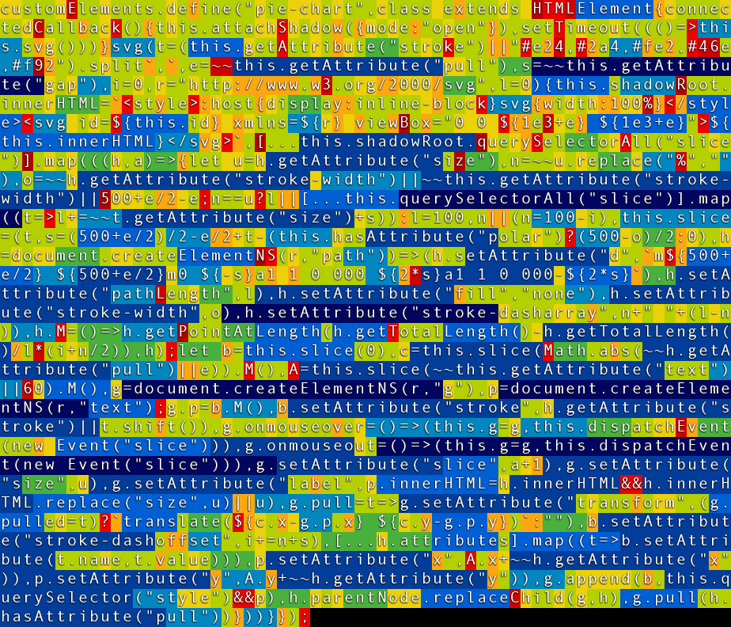

My first computer learned me to program in Z80 Assembly Language and 4 kB memory.
I tried to create a <pie-chart> Web Component in a maximum of 3.14 kB... and failed
Labels are only shown when a
Pie slices emit mouseenter & mouseout Events to the pie-chart Element
pullpie.addEventListener("slice", (evt) => {
let slice = evt.target.g; // SVG <g> element with slice <path> and <text> label
slice.pull(!slice.pulled)
});
api.addEventListener("slice", (evt) => {
let slice = evt.target.g; // SVG <g> element
slice.pull(!slice.pulled)
console.log(`slice.pull(true/false) method`);
//slice
//slice.path
//slice.create
console.log(slice)
slice.append("21")
});
<slize size="10"><span> HTML here breaks the SVG </span></slice>
<pie-chart>
<slice size="20%">Big si⁠zed Apple (size)</slice> <!-- Big sized Apple (20%) -->
<slice size="15%">Small si⁠zed Apple (size)</slice> <!-- Small sized Apple (15%) -->
</pie-chart>
Can you squeeze out more bytes? (orange, red = costly encoding)
I have been working with Web Components for some years now. And for the first time since my first HTML experience in 1994 I got excited again.
Developing Web Components requires a different mind-set, you can't compare that to 'oldskool' framework development.
It took me 5 years to unlearn what I had learned in 25 years. It is 2021, I am slowly getting comfortable with Web Components, but know it is still early days.
Where frameworks deliver (semi-) finished products, Web Components are atoms.. or maybe we should say quarks, because a lot of scientists do not understand those either.
And yes, Web Components can built (semi-)finished products.
I foresee a future where Web Components are used like we use Libraries and CDNs today.
But contrary to libraries, Web Components won't have a pletora of functionalities.
This is not a weird idea. This is how Tim Berners-Lee imagined the Web to be
import React from 'react';
import { storiesOf } from '@storybook/react';
import { PieChart } from '../src';
import FullOption from './FullOption';
import InteractionStory from './InteractionStory';
import InteractionTabStory from './InteractionTabStory';
import LoadingIndicatorStory from './LoadingIndicatorStory';
import PartialLoadingIndicatorStory from './PartialLoadingIndicatorStory';
import Tooltip from './Tooltip';
const dataMock = [
{ title: 'One', value: 10, color: '#E38627' },
{ title: 'Two', value: 15, color: '#C13C37' },
{ title: 'Three', value: 20, color: '#6A2135' },
];
const defaultLabelStyle = {
fontSize: '5px',
fontFamily: 'sans-serif',
};
storiesOf('Pie Chart', module)
.add('Full option', () => <FullOption data={dataMock} />)
.add('Default', () => <PieChart data={dataMock} />)
.add('Custom size', () => (
<PieChart data={dataMock} style={{ height: '100px' }} />
))
.add('Exploded', () => {
const shiftSize = 7;
return (
<PieChart
data={dataMock}
radius={PieChart.defaultProps.radius - shiftSize}
segmentsShift={(index) => (index === 0 ? shiftSize : 0.5)}
label={({ dataEntry }) => dataEntry.value}
labelStyle={{
...defaultLabelStyle,
}}
/>
);
});
storiesOf('Donut Chart', module)
.add("Custom arcs' width", () => <PieChart data={dataMock} lineWidth={15} />)
.add('Rounded arcs', () => (
<PieChart data={dataMock} lineWidth={15} rounded />
))
.add('Padded arcs', () => (
<PieChart data={dataMock} lineWidth={15} paddingAngle={5} />
));
storiesOf('Loading indicator', module)
.add('360° indicator', () => <LoadingIndicatorStory />)
.add('270° indicator with background', () => (
<PartialLoadingIndicatorStory />
));
storiesOf('Partial chart', module)
.add('180° chart', () => (
<PieChart
data={dataMock}
startAngle={180}
lengthAngle={180}
viewBoxSize={[100, 50]}
/>
))
.add('90° chart', () => (
<PieChart
data={dataMock}
center={[100, 100]}
startAngle={-180}
lengthAngle={90}
radius={100}
/>
))
.add('Missing slice', () => <PieChart data={dataMock} totalValue={60} />)
.add('Missing slice with background', () => (
<PieChart data={dataMock} totalValue={60} background="#bfbfbf" />
));
storiesOf('Labels', module)
.add('Default labels', () => (
<PieChart
data={dataMock}
label={({ dataEntry }) => dataEntry.value}
labelStyle={{
...defaultLabelStyle,
}}
/>
))
.add('Outer labels', () => (
<PieChart
data={dataMock}
label={({ dataEntry }) => dataEntry.value}
labelStyle={(index) => ({
fill: dataMock[index].color,
fontSize: '5px',
fontFamily: 'sans-serif',
})}
radius={42}
labelPosition={112}
/>
))
.add('Inner labels', () => (
<PieChart
data={dataMock}
lineWidth={20}
paddingAngle={18}
rounded
label={({ dataEntry }) => dataEntry.value}
labelStyle={(index) => ({
fill: dataMock[index].color,
fontSize: '5px',
fontFamily: 'sans-serif',
})}
labelPosition={60}
/>
))
.add('Single label', () => (
<PieChart
data={[{ value: 82, color: '#E38627' }]}
totalValue={100}
lineWidth={20}
label={({ dataEntry }) => dataEntry.value}
labelStyle={{
fontSize: '25px',
fontFamily: 'sans-serif',
fill: '#E38627',
}}
labelPosition={0}
/>
))
.add('Percentage', () => (
<PieChart
data={dataMock}
label={({ dataEntry }) => Math.round(dataEntry.percentage) + '%'}
labelStyle={defaultLabelStyle}
/>
));
storiesOf('Animation', module)
.add('On mount clockwise', () => <PieChart data={dataMock} animate />)
.add('On mount counterclockwise', () => (
<PieChart data={dataMock} lengthAngle={-360} animate />
));
storiesOf('Interaction', module)
.addParameters({ options: { showPanel: true, panelPosition: 'bottom' } })
.add('click, mouseOver, mouseOut callbacks', () => (
<InteractionStory data={dataMock} />
))
.add('Tab + Enter key press', () => <InteractionTabStory data={dataMock} />);
storiesOf('Misc', module)
.add('Single gradient', () => (
<PieChart
data={[{ value: 10, color: 'url(#gradient1)' }]}
startAngle={-180}
lengthAngle={180}
lineWidth={20}
viewBoxSize={[100, 50]}
>
<defs>
<linearGradient id="gradient1">
<stop offset="0%" stopColor="#4CAF50" />
<stop offset="45%" stopColor="#ffb961" />
<stop offset="55%" stopColor="#ffb961" />
<stop offset="100%" stopColor="#C13C37" />
</linearGradient>
</defs>
</PieChart>
))
.add('Squared pie', () => (
<PieChart
data={dataMock}
label={({ dataEntry }) => dataEntry.value}
labelStyle={defaultLabelStyle}
radius={75}
/>
))
.add('Tooltip integration', () => <Tooltip data={dataMock} />);